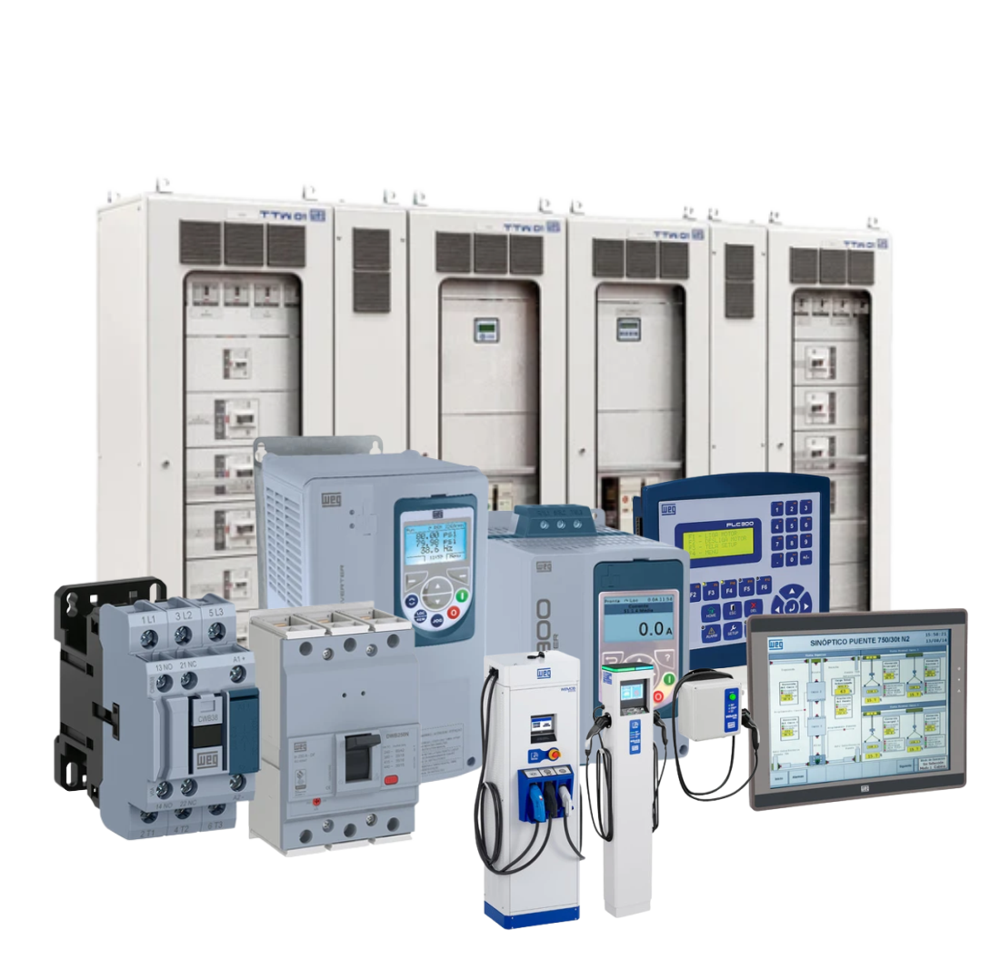

Motores Elétricos
O Motor elétrico Weg é o mais importante item de uso final de energia elétrica no país, tendo uma enorme participação no setor industrial. No Brasil, a quantidade de energia que os motores elétricos Weg geram é de aproximadamente 60% da energia elétrica total consumida no país.
